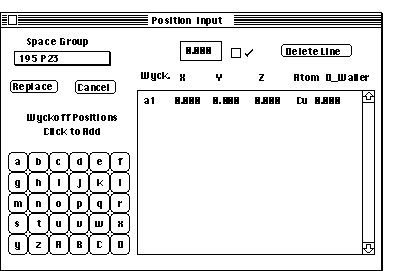

Wyckoff Positions Tutorial/
Using Space Groups To Enter Atomic Positons
To Get To the Wyckoff Positions, Click on the button Wyckoff Pos. in
the Crystal Definition Dialog box. The
dialog box Wyckoff Positions appears
as shown below:

Click on the Space Group pop-up menu (the pop-up menu just below the
title Space Group), and pull down the menu to the space group designated
139 I4/mmm. This is the space group designation for the structure associated
with Al3Ti and provides the necessary generator set. These positions are
shown in the table below.
Position Calculator.
Selecting a Space Group changes the active buttons in the Position Calculator
on the left hand side of the dialog box. The position calculator corresponds
to the Wyckoff positions avialable for the selected space group.
- Click on b and then d enters the 2b and 4d Wyckoff positions in the
the atomic list on the right of the dialog box. There should be 3 current
positions: 2a, 2b and 4d.
Editing An Atom Type
- Replace the Cu atom for the 2b position with an Al by selecting the
Cu atom in the 2b position, typing Al into the Edit Box and pressing
or clicking on the check box.
- Replace the Cu with a Ti and press or click in the enter box
for the 2a position.
Editing An Atomic Positon
Changing Atomic Positions is simple. Click on the position of interest and
make the changes in the editing box, then press the key or the Enter
box. This action will advance the cursor to the next position box.
- Enter .5 under Y and .25 under Z for the 4d position. Make certain
to click the Enter box or press the key for each value.
Return to Crystal Dialog, Replacing Atoms with new positions
- Click Replace to return to the
Crystal Definition Dialog Box and replace the
previous atoms with a new set of atoms. Although the instructions suggested
typing values in the 4d position, this is not required. For the positions
selected, the atom positions are completely defined by the Space Group definition.
NOTES:
- It is possible to go immediately to the Wyckoff Positions after
selecting the correct crystal family. It is not necessary to set the total
number of atoms prior to using the Wyckoff Positions.
- Clicking on Replace will delete all currently defined atoms and
subtract any excess or duplicate atoms. in the Crystal Definition Dialog
Box.
- If the given Wyckoff Position requires a variable (designated as
x,y,z in the Space Group tables), THE CORRECT VALUE MUST BE INSERTED. If
there are questions, either go to the latest issue of the International
Tables (Vol. A) or refer to the abbreviated tables in this program.
- To add specific atoms not based on symmetry, to change specific
positions or elements use the Crystal Definition
Dialog Box independent of the Wyckoff Positions.
- Use the Delete button to delete unneeded Wyckoff Positions.
- If,the user is not sure of the exact Wyckoff Position. Select the
general position, (the highest alpha value, in this case 'o') and type in
the given values for the atomic position. Upon clicking the replace button,
Desktop will eliminate any redundant atoms and generate the unit cell.
Back to Crystal Definition Tutorial.
Author:James T. Stanley J.
Stanley
 Desktop
Manual
Desktop
Manual
Distributed By: Virtual Labs
Last Updated:1/12/96 Sat, Apr 27, 1996